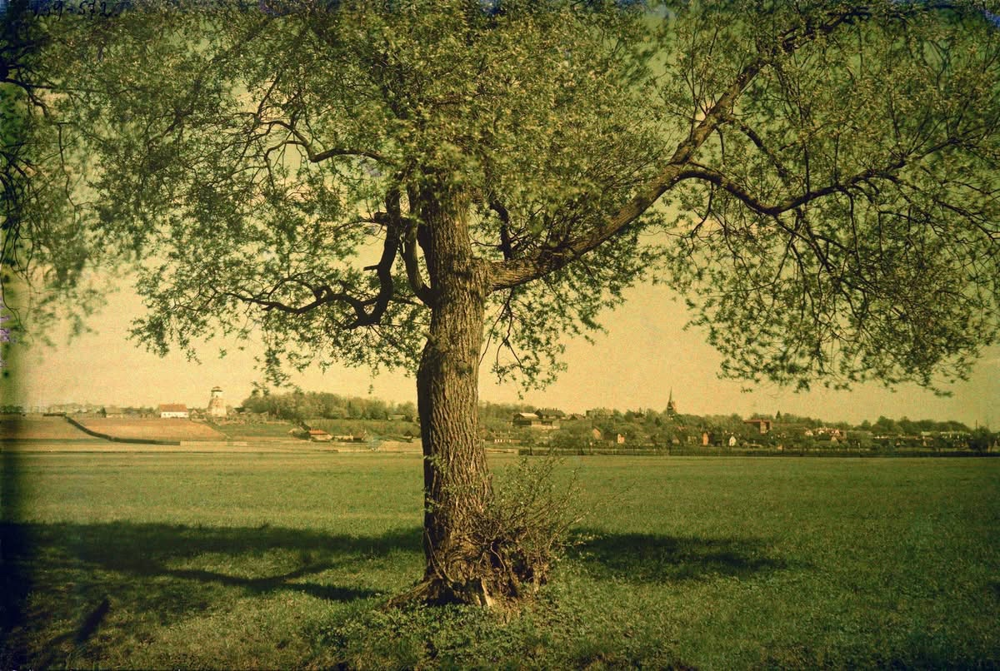
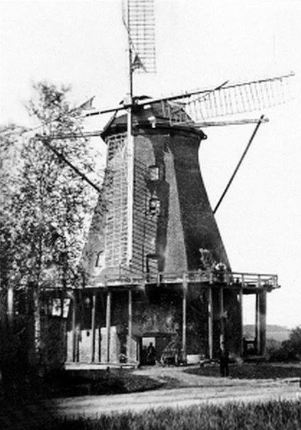
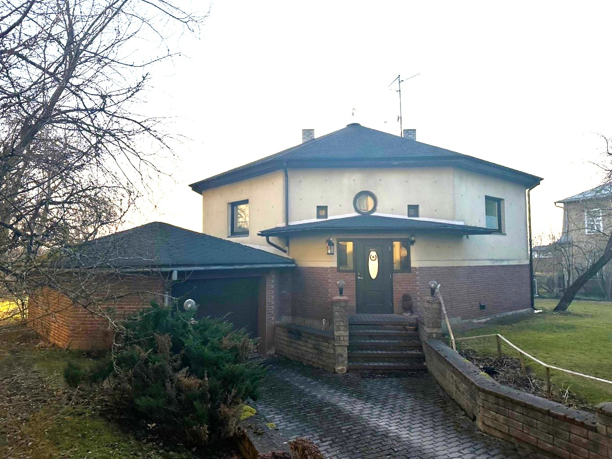
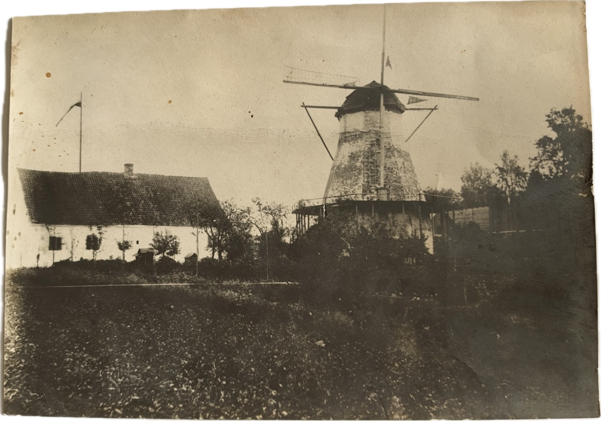
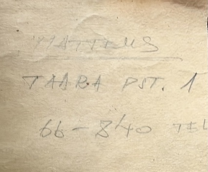
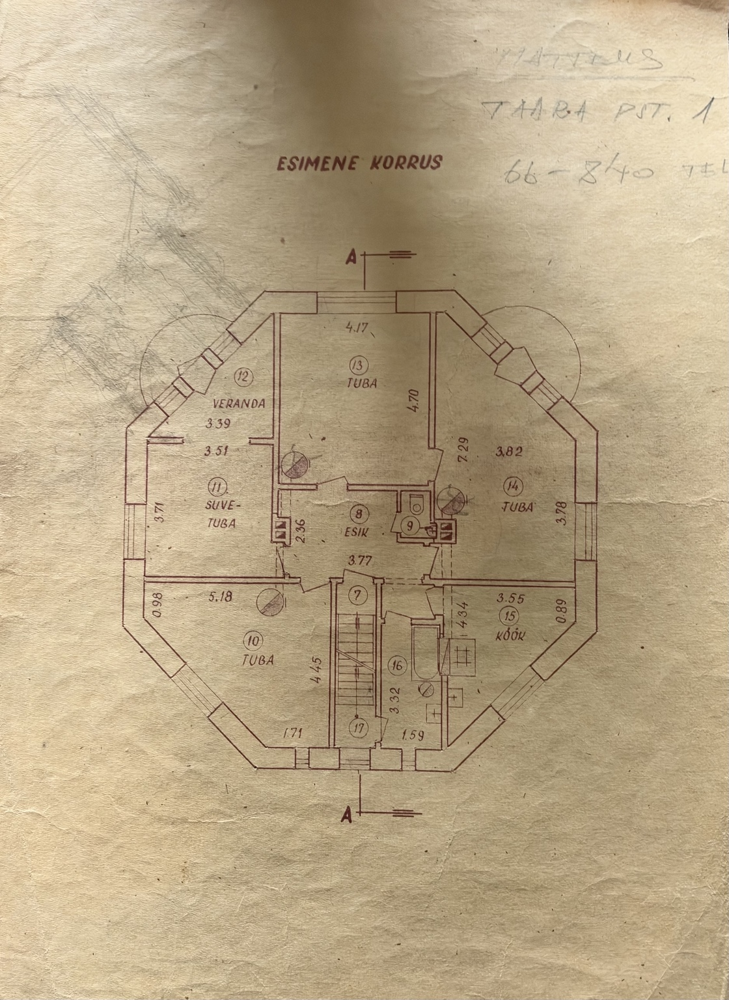
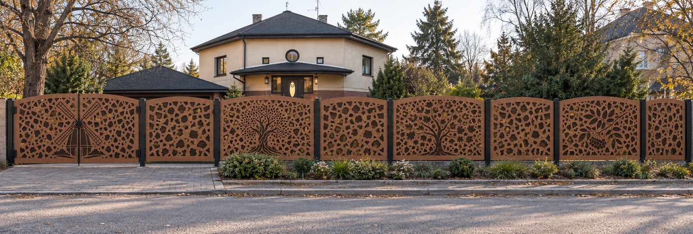

Siin seisis tuulik.
Puiestee 13 kohal asus 19. sajandist pärinev kivist tuuleveski, mida tuntakse Puiestee tuuliku ehk Laasi tuulikuna. See pärineb ajast, mil tänase Puiestee tänava ümbrus oli veel hõredalt hoonestatud.
Vana veski ei kadunud jäljetult. Selle varemetele rajati hiljem elumaja ning tuuliku algsed, üle meetri paksused maakivimüürid on säilinud tänase maja alumise korruse seintena.



Tuulik ja tema ümbrus

Majaga koos on säilinud ka ajalooline foto, millel avaneb laiem vaade tuulikule ja selle ümbrusele. Näha on veskitorni, galeriid ning kõrval paiknenud hoonet.
Foto on tänaseni Puiestee 13 majas ning moodustab osa selle koha säilinud loost.
Tuulikust koduks
„Arnold Matteus andis vana veski varemetele uue elu – nendele rajati elumaja.”
Vana veski varemetele kujundas elumaja Tartu arhitekt ja kauaaegne linnaarhitekt Arnold Matteus (1897–1986). Tuuliku algsed maakivist välismüürid jäid alles ning moodustavad tänaseni maja alumise korruse seinad. Kohati on need üle meetri paksused. Maja säilinud esimese korruse projektijoonisel on käsitsi kirjutatud MATTEUS, tema aadress Taara pst. 1 ning telefoninumber.
Nende vanade müüride peale ja ümber kujundas Matteus elamiseks vajaliku ruumiprogrammi. Nii on osa 19. sajandi veskist füüsiliselt tänase maja osa.


Ühe koha pikk lugu
Laasi ehk Puiestee kivituulik seisab Tartu serval. Täpne rajamisaasta on veel uurimisel.
Tuuliku töö lõpeb, kuid massiivsed maakivimüürid säilivad.
Vana veski varemetele kujundatakse Arnold Matteuse projekti järgi elamu.
Puiestee 13 uuendamine jätkub austusega paiga ajaloo vastu. Kavandatav uus eesaed hakkab kinnistu vana lugu edasi kandma.
Kavandatav eesaed kasvab välja selle paiga loost.
Puiestee 13 kavandatava uue eesaia kujundus ei ole juhuslik dekoratsioon. Selle motiivid lähtuvad kinnistu enda ajaloost, Puiestee alleest ja koduaiast ning hakkavad siduma vana veskikohta tänapäevase koduga.

Autoväravatele on kavandatud ajaloolise Laasi tuuliku kujutis – otsene viide hoonele, millest tänane Puiestee 13 alguse sai.
Tamme ja vahtra kujutised on inspireeritud Puiestee allee puudest ning toovad kavandatavasse eesaeda tänava enda ajaloolise rohelise ruumi.
Pihlaka kujutis lähtub päriselt sellest paigast: pihlakas sirgub Puiestee 13 aias ning saab kavandatavas aias osaks kinnistu visuaalsest loost.
Kavandatava eesaia kontseptsioon on loodud koostöös Seclusaga – erilahenduste disainiteenusega, mis muudab personaalse idee tootmisvalmis lahenduseks. Puiestee 13 on näide sellest, kuidas aia kujundus võib jutustada just selle paiga enda lugu.
Minevik jääb nähtavaks.
Puiestee 13 ajaloo uurimine jätkub. Täiendame seda lehte arhiivijooniste, vanade kaartide, fotode ning tuuliku rajamisaja ja nime päritolu kohta leitud andmetega.
Kavandatav uus eesaed hakkab sama lugu edasi kandma – Laasi tuuliku kujutis autoväravatel, Puiestee alleest inspireeritud tamm ja vaher ning maja aias kasvav pihlakas seovad ajaloo, tänavaruumi, maja ja aia üheks tervikuks.